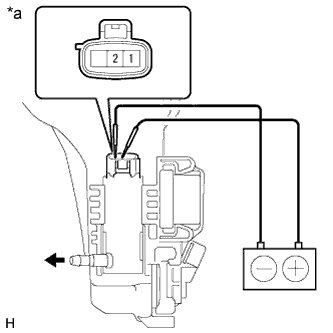

HEADLIGHT CLEANER MOTOR > INSPECTION |
| 1. INSPECT HEADLIGHT CLEANER MOTOR AND PUMP ASSEMBLY |
Remove the washer jar.
Disconnect the headlight cleaner washer motor and pump connector.
Fill the washer jar with washer fluid.
|  |
Connect the positive (+) lead of the battery to terminal 2 of the headlight cleaner washer motor and pump, and the negative (-) lead to terminal 1.
| *a | Component without harness connected (Headlight Cleaner Motor and Pump Assembly) |
Check that washer fluid flows from the washer jar.